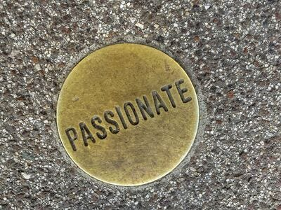
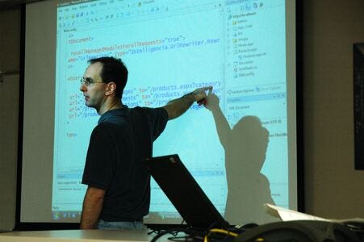
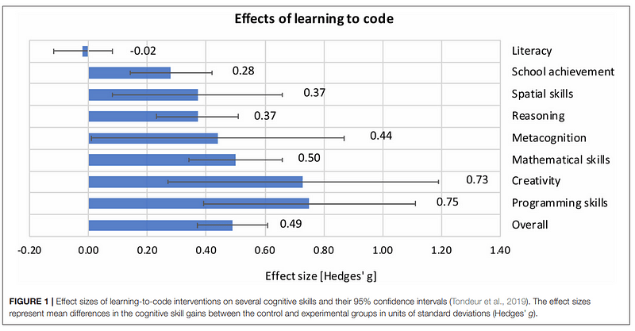
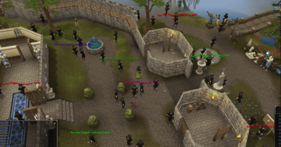

Can anyone be a coder? This is a vague question. What people actually mean is "what is my potential as a programmer?", or "how should I manage my expectations?"
Perhaps a better question would be, "should I code as a hobby or become a professional?"
These are all valid questions. Most people want to asses their potential before starting to code.
Now, you can always just code as a hobby. This is how I believe all people should start out.
Coding should be a passion that, if you find your level of skill is sufficient, you go pro.
It is kind of like sports. If you play football you don't say you are going to the NFL or college varsity right at the beginning.
I don't mean to offend but that is foolish.
Instead you should enjoy the sport, manage expectations and take in the benefits of the hobby.
Then perhaps, if you have the knack for it you go pro.
The reason I say this; a lot of people are not cut out for professional software development.
But, if you love coding then why not do it?
Passion Beats Natural Talent
If you had to choose between a natural talent and a natural passion, I would choose natural passion all day.
Photo by Etienne Girardet
All genius is earned, no matter what. It doesn't matter if your natural talent is the best or average, to learn something like a function or variable, requires a study of the material either way.
Even if you are talented you still have to learn the same thing just like the guy next to you.
In time a person with full passion goes much farther than someone with no passion. They often quit long before the other.
What passion looks like without natural talent
Though I will note, there are individuals who will code for years and see no progress. They cannot logically put together a solid chunk of code.
I have seen this before. There is a lower intellectual limit where learning to code is simply too hard for passion to beat.
However, I would say that would be the bottom 10% of natural talents.
At the same time I have seen brand new coders discover programming and within a week are making classes and data structures.
They would be the top 10% of people.
If I had to peg myself I would say I am in the bottom 30% but definitely not the bottom 10%.
As evidence of this, I had an extremely hard time with object oriented programming and python indentation/loops.
It took me about a month to really understand indentation/looping in Python. It was extremely difficult and I had to watch many many videos to really understand it.
Photo by Wonderlane
I remember going to class and asking how in the world those loops worked. My professor, Dr. Mohammad, raised his eye brows and said "some of us have a hard time learning to code".
Object oriented programming took me about 3 months of banging my head against the wall all day trying to understand how the hell a class is a data type.
I hadn't realized that this learning speed was abnormal and believed this was just part of the process.
It wasn't until later when I was tutoring undergrads that I noticed their learning speed was phenomenal.
Well, to me it was phenomenal but for everybody else it was an average speed.
I kept coding with a passion, I absolutely loved the process of putting together a program that worked to my liking.
Eventually I created many many programs and got to a point where I was able to make my own architectures in machine learning, websites in 4 different backend languages, manage databases, make some basic graphics programming projects and heavily contribute to an MMORPG.
I also did some novel research on transformers in my masters program, with a 4.0.
Yea, I am proud of that.

Photo by Mr. Bochelly
What was pretty cool, the more programming I learned, the faster my learning speed became.
Today, my coder friends say I am one of the fastest learners they know. They stumble on to some topic of programming, I read the documentation and pick it up right away.
I have seen this happen to people time and time again. As they learn more programming their ability to learn programming improves.
Their mind recognizes patterns and eventually adapts to the craft.
Natural talent can be trained as well.
How the best coders are the best
I want to explain a bit about the best coders. Let's say I want to separate coders into tiers 1-10.
1 being someone who never coded and 10 being the top coders in the world.
I believe a person with average talent and full passion can get to a 7 or 8 (one of the best out there).
Passion trumps natural talent at these levels.
Photo by Patrick Lordan
But, to be world class, 9 or 10, you require both natural talent and that same passion.
Given loads of time and experience, the very best are distinguished by their natural talent.
Don't let this deter you though. Each of us should not compare and instead go forward with full enthusiasm.
Age Matters but Not As Much as You Think
Age is often associated with slower learning or a lack of technical aptitude. My issue with this, is that the ability to learn is like overall body strength.
If you train your body you will naturally grow stronger.
But, will you ever have the same strength potential as when you are between the ages of 16-25?
Photo by Total Shape
No, you won't.
But beyond the age 25 you can get pretty strong.
In fact, for those that don't have a dementia gene or some head injury, you can get really strong.
Constant learning improves the ability to learn.
By not continuing to learn we become weaker at learning.
It is not the aging the usually weakens our learning ability but the fact that as we age we already know things and we learn less.
At the beginning of life, everything is new.
All things are an experience of learning and, we therefore become strong learners at that age.
Had we not been exposed to that level of learning while young, we would grow weak. In the same sense that happens to us in older age.
Photo by Hal Gatewood
If we constantly learn we stave off the symptoms of an aging brain[1].
Point being, whether we are constantly learning affects us more than the aging.
Though age does matter, mental exercise matters more...
Even With a Mental Disability, You Should Code
Coding improves the faculties of the mind. Mental disabilities should not be a reason not to code, but a reason to code.
Even without a load of natural talent on your side coding is worth it for what it does to the brain. You can read my article about how coding improves IQ.
This is the same concept as to how learning an instrument or learning a language is great for people to stave off the symptoms of a mental disability.
For example, during a meta-analysis of literature about the effects of learning to code Dr. Scherer published a study of a control group of students who were both learning to code in their education and not learning to code in their education.
Photo by author Ronny Scherer [2]
The students who learned to code faired much better off on intellectual assessments at the end of their education (duration was not mentioned). The portion in blue are the students who did not learn to code and those in the bars to the right are those who learned to code during their education.
Though, he states this is a loose and unclear indication, as intellect is hard to measure. This is why he titled it "some evidence" rather than "evidence" of cognitive benefits....
Mental exercise benefits disabilities
Two disabilities coding helps in particular are psychosis and autism.
I have seen and spoken to software engineers who experienced psychosis either due to drugs or genetics.
They often say it felt like coding kept them together during their drug withdrawal or hallucinations.
Right now I have two friends who are in psychosis and are coding constantly out of passion.
I see their progress both as a person and a coder. I absolutely love reviewing their code and listening to their shenanigans as they think I am part of the CIA.
Photo by Laineema
One of them even got a job at NVIDIA as a software engineer, while I did not. :(
Point being, mental disability should encourage you to code as a proactive cope and self-improvement.
My Code Sucks! Should I Quit?
We will often see senior engineers pump out clean and performant code. We wonder how in the world that is possible. How does he produce such magnificent work?
More often this is not an indicator of natural talent but experience in the craft.
As we code and strive to optimize our code (as we should), we find ways to code better than before.
We sort of create a collection of coding methods and techniques within our frameworks and languages.
All of it mixes around and eventually produces the ability to create good code.
The secret is to always refactor and relearn the best ways to write code in your niche.
If you have a passion project it should go through a good dozen refactors, getting better every time.
I remade darkan.org 4 times in different refactors and learned better ways to create its features every time.
At the time I was quite proud of my work. Now I cringe at its code. I personally want to refactor it again. I am a better coder nowadays anyway.
Anywho, I hope you learned something...
Happy coding!
Resources
[1] Reducing brain age: https://www.amenclinics.com/blog/how-old-is-your-brain-and-how-to-make-it-younger/
[2] Some evidence on the cognitive benefits of learning to code: https://www.ncbi.nlm.nih.gov/pmc/articles/PMC8458729/pdf/fpsyg-12-559424.pdf
Coding boosts IQ: 4 Ways Coding Boosts Your Brain and Makes Life Easier